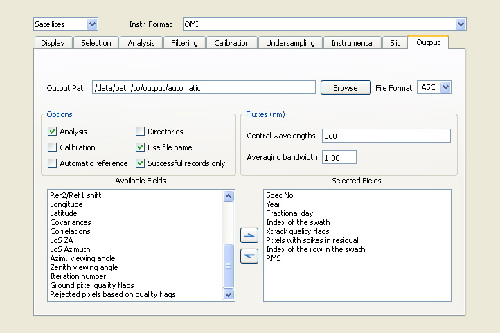

QDOAS Projects Properties : Output page

This page is dedicated to the selection of information on analyzed records to write in the output file after calibration and/or analysis of spectra. When the Analysis button is checked, all the fields in this page are enabled and it is also possible to make a fine selection of the results of the fit to save in the Analysis windows properties pages.
When the user selects chooses « .asc » as the file format, the program produces ASCII files with tab-separated columns for all selected output fields. These files may be loaded in spreadsheets such as Excel. The first line of the analysis output starts with a hash (#) character and is used to print the column titles.
When the Calibration button is checked, wavelength calibration results are saved before the analysis results. Lines with calibration output start with a semicolon (;). If an ASCII output file already exists at the specified location, QDOAS appends the new results to the existing file. In this case, column titles and calibration information are not repeated. Therefore, it is best to avoid writing to existing files, unless exactly the same analysis and output configuration is used to produce the new data. To replace the content of an existing output file, the file must first be deleted manually.
When the user selects the file format « .he5 », QDOAS produces HDF-EOS5 (a binary output format based on the HDF5 format) output files. The resulting files can be used in programming environments such as Matlab or IDL, or using the application hdfview. In HDF-EOS5 Output mode, each field is saved as a different data field in the resulting HDF5 file. Depending on the kind of information contained in the field, QDOAS automatically saves the data as a geolocation field or a data field. In HDF-EOS5 mode, QDOAS reports an error if a file already exists at the chosen output location, and the results will not be saved.
QDOAS always saves all the output from a single input file in one shot, either when it has processed the last spectrum of an input file, or when the analysis is stopped using the stop button .
By default, QDOAS only saves records successfully analyzed. If the button Successful records only is kept unchecked, all records including reference spectra and records for which the analysis fails (e.g. log error on the spectrum) are saved. The filling value for bad records is 9.9990e+003. Such a situation can be useful for example to retrieve information on the reference spectra or to compare the whole file without a preliminary coincident entries filtering.
Examples of output files can be found in annex of the QDOAS Software User Manual.
Automatic creation of the output file name
The path and the name of the output file can be specified in the Output Path field. If « automatic » is used as a file name, QDOAS will generate the name of the output file automatically, using the user-defined output path as a base.
For ground-based measurements, the Directories and Automatic reference buttons have no effect. The original file name is always used (but the file extension is changed in « .ASC ») except if the Use file name button is unchecked and an observation site has been specified in the Instrumental page. In this case, the output file name is built as follows :
<output path>/XXYYYYMM.ASC
where :
| output path | is the user-defined output path; |
| XX | is the abbreviation of the observation site selected in the Instrumental tab page; if no observation site is specified, the original file name is used; |
| YYYYMM | is the year and the month (zeros padded) of measurements |
For satellite measurements, the Use file name button has no effect. If overpasses calculation is requested (option Sites in the Geolocation frame of the Selection page), then the output file name is determined as above (<output path>/XXYYYYMM.ASC where XX is the abbreviation of the station). Otherwise, for SCIAMACHY files, the output file name automatically created has the syntax SCIA_YYYYMMDD_NNNN.ASC where YYYYMMDD is the date of measurement (year, month, day) and NNNN the orbit number. For other satellite formats, the original file name is used (but with the file extension « .ASC »). Files are distributed in a year/month/day folder structure if the Directories button is checked.
The flux is the value of the signal averaged over pixels within a bandwith around the specified wavelength. Divided by the exposure time, this can be used to check a relative intensity. To calculate and save fluxes in the output file, specify the central wavelengths separated by the semicolon (;) character. For example, to get fluxes at 330 nm, 350 nm and 380 nm, enter :
330; 350; 380;
From version 2.107, the averaging bandwidth in nm is also requested (for example a bandwidth of 1 nm means that pixels within the central wavelength +/- 0.5 nm will be averaged). But it is not possible to output colour indexes anymore. The colour index is the ratio between two fluxes; the calculation outside QDOAS is easy if both fluxes are output.
The content of this frame is similar to the one in the Display page. In QDOAS, the output is fully configurable. Information related to the measurements (e.g. date and time, viewing angles, geolocation coordinates, ...) can be selected in this page. The selection of analysis results (e.g. slant column densities, fitted non-linear parameters,...) is made individually in the Analysis windows properties pages. The selected instrument or file format determines the list of fields available for output. For example, information on cloud fraction and cloud top pressure is available only for satellite instruments. A non-exhaustive list of fields available for ground-based and satellite measurements is given in annex of the QDOAS Software User Manual.